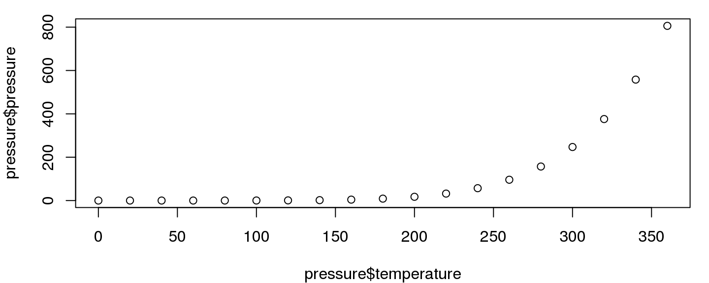
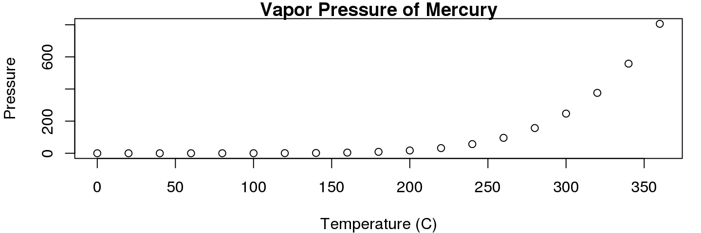
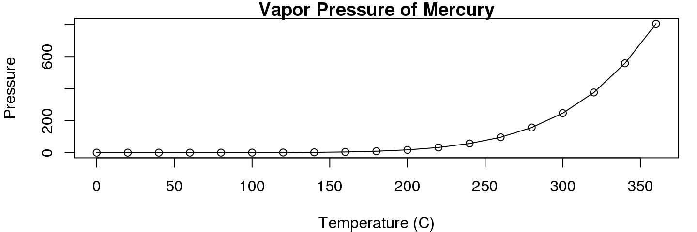
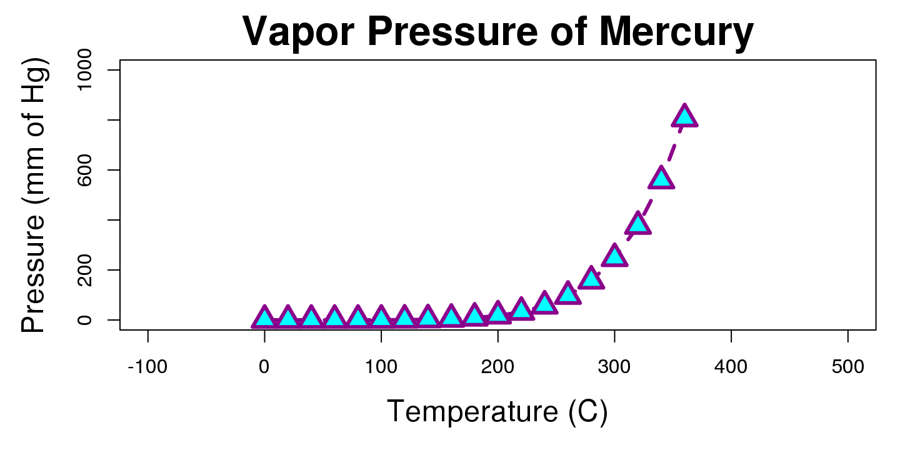
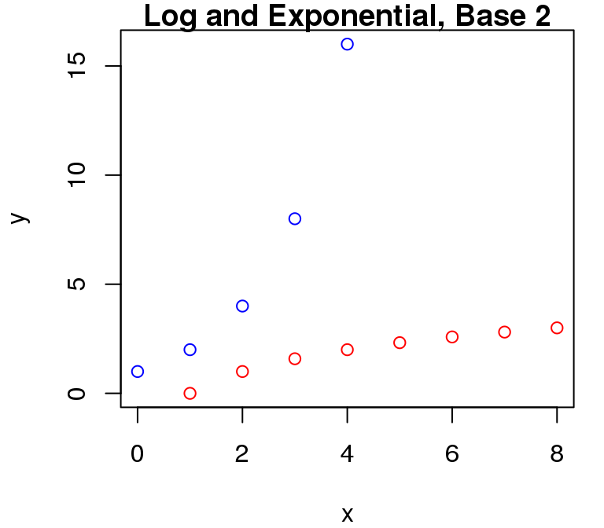
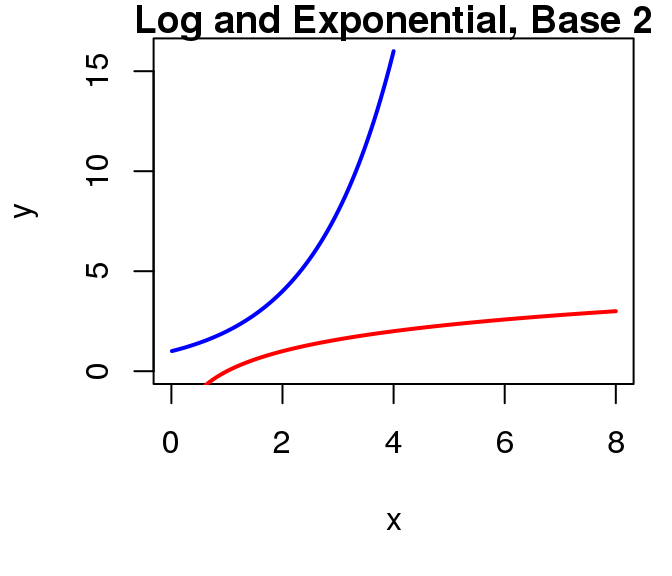
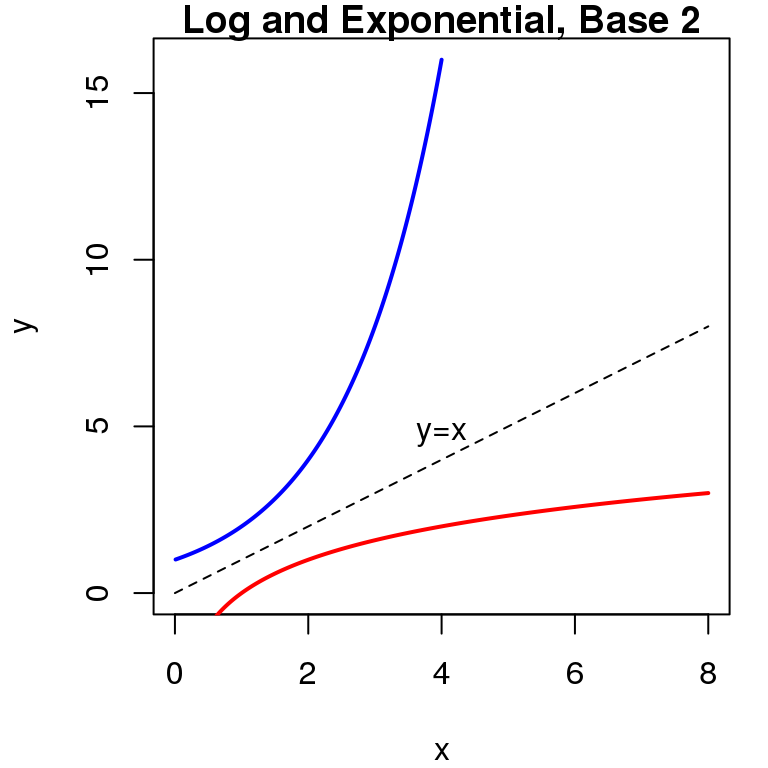
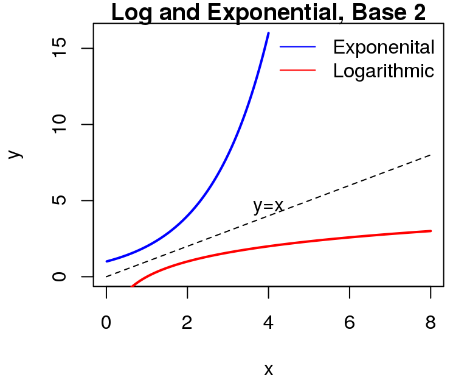

- R includes highly flexible and powerful tools for visualizing many kinds of data
- One tool for analysis and visualizing == win-win!
- However, using these tools can seem trying to hike through the Amazonian jungle, so its good to have a guide
- We will try to balance the two approaches to learning plotting in R
- The "cookbook" approach: When you have data like w, plot them with function x and use arguments y and z
- The "microscope" approach: Study the behavior of function x in depth, learning every in and out of how it works, every quirk, etc.
2016-09-16
Base R Graphics
plot
- Lets start with the most commonly used graphing function:
plot() - Using the
pressuredata set, lets plot the vapor pressure exerted by mercury as a function of its temperature.
> plot(pressure$temperature, pressure$pressure)

plot

- We can gather that as temperature goes up, vapor pressure goes up as well, but this isn't the world's prettiest graph. Lets go to the help page and see if we can tweak it to looks a little nicer
?plot
plot
Wait, plot only takes 2 arguments???
But look, theres that ...

Global Graphical Parameters
Deep down, inside the depths of the earth the graphics namespace, R maintains default settings that govern the appearance of every figure you generate.
- Sometimes, you can change these settings through the function interface itself
- e.g., through the
plot()function & the... - This will change the settings for the current figure only
- e.g., through the
- You can change these setting on a global level (i.e. every subsequent plot) using the
par()function- Mortals beware of the help page for
par() - We'll use par soon enough =)
- Mortals beware of the help page for
Plot-Specific Parameters
For now, we're going to look at which aspects of our figure we can change just through the plot() function interface.
The second paragraph of the description gives a clue as to where we can find out our options: "For simple scatter plots, plot.default will be used".
If we navigate to the plot.default help page, we see this:

Plot-Specific Parameters
- Start by changing the 3 things you always change:
- The x-axis label, set with the
xlabargument - The y-axis label, set with the
ylabargument - The plot title, set with the
mainargument
- The x-axis label, set with the
> plot(pressure$temperature, pressure$pressure, xlab="Temperature (C)", ... + ylab="Pressure", main="Vapor Pressure of Mercury")

Plot-Specific Parameters
- We can also change way the data points are displayed, with the
typeargument.- Points plus a line connecting them can be done by setting
type = "o"
- Points plus a line connecting them can be done by setting
> plot(pressure$temperature, pressure$pressure, xlab="Temperature (C)", ... + ylab="Pressure", main="Vapor Pressure of Mercury",type="o")

Interfacing with par via plot
- You can manipulate other aspects of your plot's appearance in the function call to
plot(), even though they are not listed in the Usage section- This is because
plot()passes named arguments that don't match its own list of arugments onto the common graphics settings function, via that... - This way, the settings will only affect the current plotting command
- This is because
Interfacing with par via plot
| Argument | Behavior | Values |
|---|---|---|
| col | Point and line color | color name string or RGB hex value |
| pch | The symbols used for points | Numeric vector (see ?points) Cheat Sheet |
| bg | The fill color of points | Same as col |
| lty | line type (dotted, dashed, etc.) | Type name or numeric vector Cheat Sheet |
| lwd | Line thickness (including point perimeters) | Numeric Vector |
| cex.* | Magnification (2x, 3x bigger, etc.) | Numeric Vector |
Change all the things!
> plot(pressure$temperature, pressure$pressure, xlab = "Temperature (C)", ... + ylab = "Pressure (mm of Hg)", main = "Vapor Pressure of Mercury", ... + type="o", lwd = 3, lty = 2, pch = 24, col ="darkmagenta", ... + bg = "cyan", cex = 2, cex.main=2, cex.lab = 1.5, xlim = c(-100,500), ... + ylim = c(0,1000))

Activity
Using the mtcars dataset, plot each cars miles per gallon against its weight in a scatter plot (miles per gallon is in the mpg column, and its weight is in the wt column).
Plots the points in fillable diamonds, and set the fill color (aka background color) of those points to something pretty (see colors() for a list). Also add a title and informative axis labels.
What kind of relationship do weight and mpg have?
Adding to an existing figure
- We rarely plot one set of points or one line and call it a day. Having two sets of data on a figure that makes comparison easy is often the entire point of a figure!
- R includes functions for modifying existing figures. We'll now look at functions that:
- Add new points
- Add new lines
- Add text annotations
- Add legends
Adding points
- Not suprisingly, the R function which can draw new points is called
points - Just like
plot(),points()only has a few explicit arguments, but passes on arguments to the underlying graphics settings in R.col,pch,lwd,bg, andcexare all commonly used withpoints()
- But unlike plot,
points()does not have a way to change things on the "outsides" of the plots- Can't change the axis title, axis limits, main title, etc.
Adding points
Lets plot the exponential and logarthimic functions of base 2 against each other, at a few small integers.
> plot(x=0:4,y=2^(0:4),col="blue",xlim = c(0,8),ylim=c(0,16), ... + main = "Log and Exponential, Base 2",ylab= "y",xlab="x") > points(x=0:8, y = log2(0:8),col = "red")

Adding lines
Next we'll visualize this relationship with a line graph via the lines() function. If we want a smooth line, we'll need to use a lot of points.
> x1 <- seq(0.01,4,.01) # 400 points, .01 apart > x2 <- seq(0.01,8,.01) # 800 points, .01 apart > plot(x=x1,y=2^(x1), col="blue", xlim = c(0,8),ylim=c(0,16),ylab= "y", ... + xlab="x", main = "Log and Exponential, Base 2", type='l',lwd=2) > lines(x=x2, y = log2(x2), col = "red",lwd=2)

Adding text
Next we'll add the identity line, and label it with the text() function.
> lines(x=seq(0,8,.01),y=seq(0,8,.01), lty=2) > text(x=4,y=4.75,labels="y=x") # centered at (4,4.75)

Adding a legend
We'll include legend that associates each function with its line color so others can tell which function is which.
In legend(), we need to tell the function to draw lines, color them, label them, and skip the bounding box on the legend.
> legend("topright", legend = c("Exponenital","Logarithmic"),
... + col=c("blue","red"),lty=1, bty="n")

Activity
Show the standard normal PDF and the Student's t PDF with 15 degrees of freedom on the same plot, across a reasonable range on the x-axis.
Plot the distributions in 2 different colors, and add a legend telling the viewer which color corrresponds to which distribution.
Remember that you can calculate the normal density at any point on the x axis using dnorm and the t density using dt.
Next Time
Next Up: bar plot, box plots, histograms, and par()